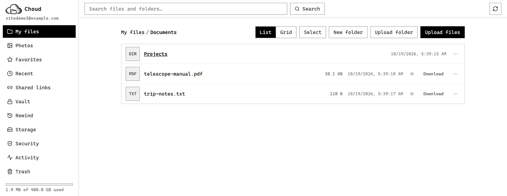
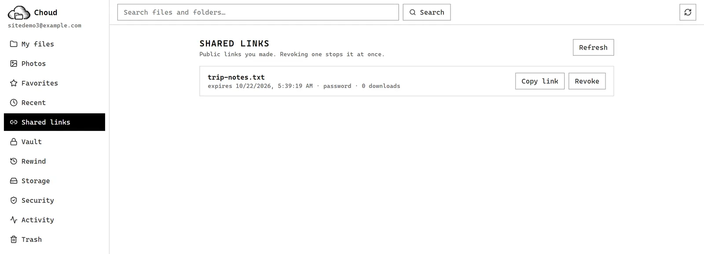
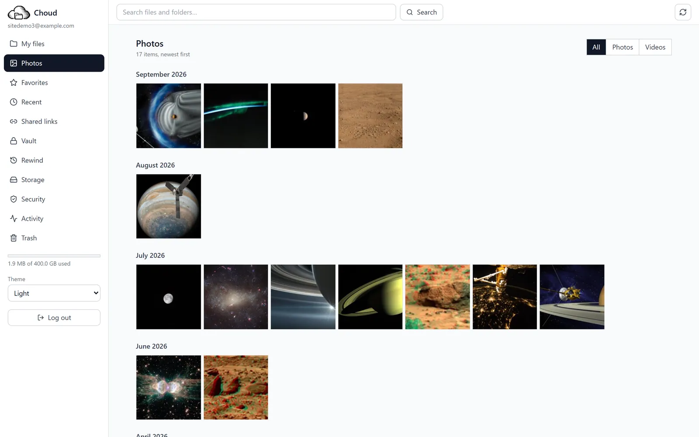

Your own cloud. Your own server. Nobody else's.
Choud is a free, open-source Google Drive alternative you run on one spare Linux machine at home. Your phone backs up its photos to it, your laptop syncs folders with it, and every byte stays on a disk you own.
Fun fact about this page: the fonts are hosted right here. A privacy project that phoned Google just to draw its own headline would be a bit rich. Open your browser's Network tab. We'll wait.
Drop any file on the cloud.
- file
- choud-logo-light.png · 14.1 KB
- sha256
- 8aa8ec03cf5988a6…617fa64e
- stored at
- objects/8a/8aa8ec03cf59…
- written
- 14,430 bytes · flushed, then renamed
- hashed in
- precomputed for this example
Stored once. Same bytes under any other name cost nothing.
A simulation of Choud's naming rule, run in your browser. Nothing is uploaded or saved: this page has no server to send it to. Try the same file twice.

What just happened when you dropped that file
That was the real naming rule from Choud's storage engine, run on your own device. Here is what the engine does for every file you give it:
- It names the file by its SHA-256 hash, a fingerprint of the bytes. The name is the content.
- It files it under the first two characters, so no folder ever grows without end.
- It writes to a temporary name, flushes the bytes to the disk, renames, then flushes the folder entry.
- Same bytes under any name: stored once.
Downloads re-hash the stored bytes first, so a damaged file is caught instead of served.
See step three go wrong
Most storage trouble happens when the power dies halfway through saving. The next section lets you cut it.
Pull the plug ↓Pull the plug
Press the button, then pull the plug while the file is being written. Both disks lose power at the same instant.
An app that saves over the old file
idle
Choud: write aside, flush, then rename
- write to a temporary name
- flush the bytes to the disk
- rename to the real name
- flush the folder entry
idle
A simplified animation of the rule the engine follows. The real thing is tested by killing a process mid-write: durability_tests.cpp.
Two halves. The one that touches your bytes never touches the network.
A Python API owns accounts, permissions, versions, sharing and search. A C++ engine owns hashing, storage and deduplication. Only the API can talk to the engine. Click a box.
What it does for you


Photos
The Android app backs up your camera roll in the background, keeping each photo's real date, and resumes if the connection drops. The timeline paints blurry placeholders first and fills in a screenful of thumbnails at a time, so it stays quick on a slow link.
Shown: demo data (public-domain NASA images) in the app's retro theme.
Find and view
Search by file name and by what is written inside documents: text, code, PDF, Word and OpenDocument. Images, video, audio, PDF and text open in built-in viewers, so you need no other app.

Never lose anything
Every overwrite is a new version you can restore, and deleted files wait in a trash. Rewind puts any folder back the way it was at an earlier moment, with a preview first: an undo for ransomware and bad syncs.

Share
Links with an expiry and a password, view-only or "add and edit". File-request links let people send you files without seeing anything. The people you share with need no account, and one switch pauses every link at once.
Vault and people
A vault sealed in your browser: the server never sees file contents or names, only how many sealed files there are, their sizes and when they were added. Invite family and friends with one-time codes; each gets their own storage and quota.
Four themes
Two retro looks, black on white and white on black, plus an ordinary light and dark theme for people who prefer something plainer. Pick one in the sidebar; the choice follows you around the app.

The ordinary light theme.
Also: a desktop client that mirrors a folder both ways with conflict copies and never a silent overwrite, optional two-factor login, nightly verified backups, and webhook alerts. All screenshots are the real app running on demo data.
As fast as Drive on one big file. Slower on a thousand small ones.
The benchmark script reproduces the line speeds from Gizmodo's and Cloudwards' published Google Drive tests and measures how much of the line each service uses.
| Test | Google Drive (published) | Choud | Difference |
|---|---|---|---|
| 500 MB up, 19.69 Mbps line | 3:33 | 3:31 | level |
| 500 MB down, 187.95 Mbps line | 0:24 | 0:24 | level |
| 5 GB in 1,045 files, up, 100 Mbps line | 7:15 | 7:57 | 42 s slower |
| The same folder, down | 7:18 | 7:01 | 17 s faster |
Why the slower row: Choud flushes every file to disk before it counts as saved, which is what keeps it intact through a power cut. It is a deliberate trade, and the next section's demo is the reason.
The photo grid is quick because a screen of 24 thumbnails is one request instead of 24: 151 ms the old way, 15 ms now, and 13 ms to find out nothing changed. Those two are measured on the server itself.
Choud: one run each, on the author's home server (Linux Mint, 4 CPUs, v0.5.1), with the client on the same machine and the line speeds simulated by scripts/benchmark.py. Google Drive: Gizmodo's (500 MB) and Cloudwards' (5 GB) published runs, each on its own network. Indicative, not a verdict. Every number, and how to repeat it.
The landlord problem
Most cloud drives work the same way: your memories sit in someone else's building, and you pay rent to keep them there. It is a deal worth reading twice.
| The question | A rented cloud drive | Choud |
|---|---|---|
| How much room do I get? | 15 GB free, shared with your mail and photos. Then a monthly bill, for as long as you want your files. | Your whole disk. Buy a bigger one once. |
| Whose computer holds my files? | The company's servers. | The machine in your house. |
| Who can lock me out? | The company can suspend or close an account under its terms, and the files go with it. | Nobody but you. Your disk can still fail, so Choud makes nightly verified backups. |
| What if the product goes away? | That is the company's call, on its date. | It is your server and MIT-licensed code, so it keeps running. |
| What does it cost? | A subscription. | Nothing. You bring the hardware and the electricity. |
The middle column comes from Google's published terms and storage plans: check them at policies.google.com/terms. Drive is a good product, and on speed Choud only matches it. The difference is who owns the building.
One old laptop. Three commands.
You need a Linux machine with Docker. Setup writes strong random secrets. Deploy checks the machine, builds, starts, and waits until everything reports healthy.
git clone https://github.com/chinchoooo/Choud && cd Choud scripts/setup.sh # strong random secrets in .env scripts/deploy.sh # checks, builds, starts, waits until healthy
For your phone away from home, add Tailscale. The full guide, with backups and public links, is in docs/deployment.md.
$ scripts/healthcheck.sh
{
"status": "healthy",
"database": "healthy",
"engine": "healthy",
"storage": "healthy"
}
Get it
SHA256SUMS.txt to check it. Allow "install unknown apps" for your browser. It has had little time on real phones so far.pip install -e client/ on Windows, macOS or Linux. It is not a point-and-click installer yet.What it is not, yet
- The Android app has had little time on a real phone, and there is no iOS app.
- You can share by link only. Sharing with named accounts is not built.
- The desktop client is command-line only, and there is no importer from Google Drive (use Google Takeout, then upload the folder).
- It is built for one household on one machine, not for thousands of users.
- It has not had an independent security audit. Report problems privately via SECURITY.md.
Read it in an afternoon
Built by one person: a C++ storage engine, a Python API, a React web app, a Kotlin Android app and a Python sync client. The docs explain the reasoning, not only the commands.
More of my work: chinchoooo.github.io.
Questions
Is it free?
Yes. It is MIT-licensed. You pay only for your own hardware and electricity.
Can I reach it away from home?
Yes, over Tailscale. Public share links work from anywhere with scripts/enable-public-links.sh, through a separate door that can only reach shared files.
Will it run on Windows or a Mac?
To try it, yes: make dev with Docker Desktop. To keep your files, use Linux. Docker Desktop's virtual disk makes every write slow.
What if the disk dies?
Choud makes nightly verified backups, with scripts to restore them. Point them at a second disk or machine.
Is it secure?
It has optional two-factor login, rate limiting, hash-checked uploads and a separate door for public links. It has not been independently audited.
Can my family use it?
Yes. Invite them with one-time codes; each person gets their own storage and quota.